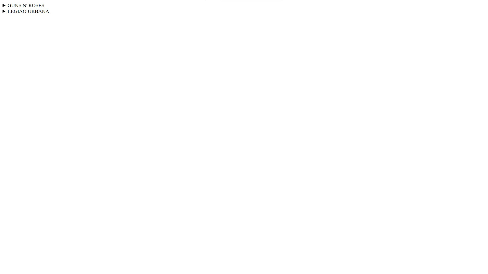
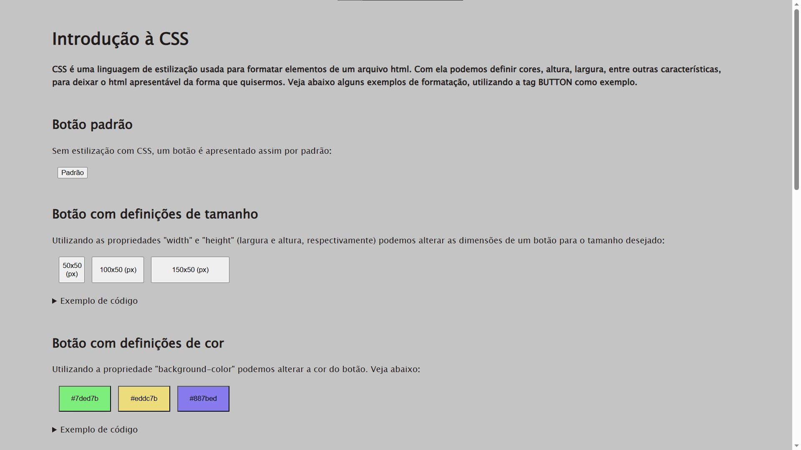
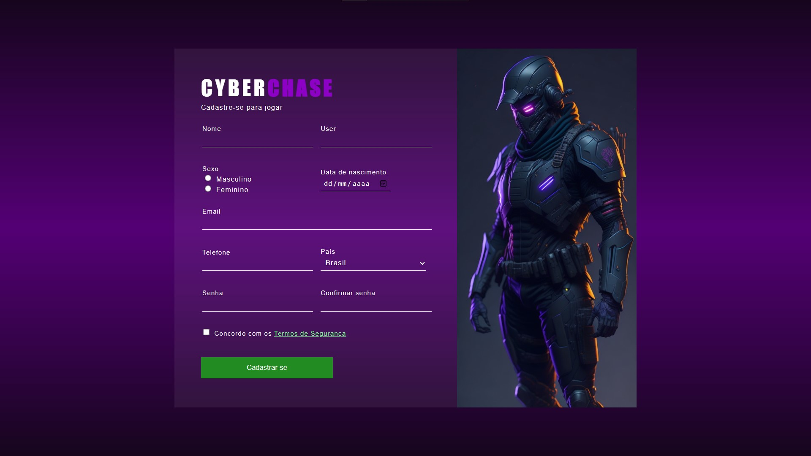

Construção de Páginas Web - Sites Feitos
Atividade 1: Guns n' Roses

Sobre a atividade
Data: 08/02/2023
Atividade: Construa um site sobre a sua banda favorita. Deve conter imagens, textos, links e pelo menos 3 páginas.
Atividade 2: Equinos

Sobre a atividade
Data: 16/02/2023
Atividade: Construa um site temático. O tema deve ser uma família de animais, por exemplo: felinos, caninos, equinos, etc. Deve conter pelo menos 4 páginas interligadas por meio de links, deve conter imagens e principalmente tabelas (pelo menos 1 em cada página)
Atividade 3: Filmes

Sobre a atividade
Data: 02/03/2023
Atividade: Construa um site temático (tema livre) utilizando o conceito de listas. Devem ser usadas listas não -ordenadas, ordenadas e de descrição. Também deve ser utilizado o aninhamento de listas e a utilização de links como itens de pelo menos uma lista. Além disso, deve-se utilizar outras tags "dentro" dos itens, tais como img, p ou outras de sua preferência.
Atividade 4: Summary
Sobre a atividade
Data: 14/02/2023
Atividade: A linguagem HTML, na versão 5, permite o uso de tags de layout, que são elementos semânticos que definem as diferentes partes de uma página web. Cada grupo deve escolher uma tag, elaborar uma apresentação de slides para explicar o conceito da tag escolhida, como utilizar e apresentar um exemplo prático em código (apresentar o código e a página).
Atividade 5: Introdução à CSS
Sobre a atividade
Data: 05/04/2023
Atividade: Escolha uma tag HTML para ser usada como seletor de elemento em uma regra CSS e construa uma página que contenha essa tag. Devem ser configuradas pelo menos 5 propriedades dessa tag usando CSS (pode ser interno ou externo).
Atividade 6: Introdução aos Formulários
Sobre a atividade
Data: 12/04/2023
Atividade: Utilizando o conteúdo e os exemplos do tutorial disponibilizado no link anterior, construa uma página que contenha um formulário (não é necessário submeter ou enviar o formulário, apenas construir a interface). Utilize pelo menos 3 tipos de inputs diferentes. O tema do formulário é livre, por exemplo, cadastro de um animal em um petshop.
Atividade 7: Formulário Temático
Sobre a atividade
Data: 02/03/2023
Atividade:Desenvolver uma página que contenha um formulário temático (o tema pode ser de escolha do próprio aluno). O formulário deve incluir inputs de pelo menos cinco tipos (types) e deve ter pelo menos 8 campos para entrada de informações.
Atividade 8: ---
Sobre a atividade
Data: 14/02/2023
Atividade: A linguagem HTML, na versão 5, permite o uso de tags de layout, que são elementos semânticos que definem as diferentes partes de uma página web. Cada grupo deve escolher uma tag, elaborar uma apresentação de slides para explicar o conceito da tag escolhida, como utilizar e apresentar um exemplo prático em código (apresentar o código e a página).